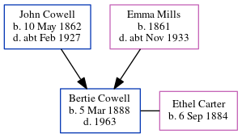

Ethel Blanche Cowell (née Kilsby) 1892 - 1978
[ Home ] | [ Calendar ] | [ Surnames Index ] | [ Errors ] | [ Family History ]Ethel Kilsby, the wife of John Francis Cowell (the third cousin twice-removed on the mother's side of Nigel Horne), was born in Daventry, Northamptonshire, England on 20 Mar 18921,2,3, was baptised in Weedon, Northamptonshire, England on 15 May 1892 and married John (a general carman with whom she had 3 children: John F Albert, Bertram S and Lillian Ethel) in Daventry on 28 Mar 19144.
During her life, she was living at White House Flats, Weedon Bec, Northamptonshire, England on 19 Jun 19215; and at 85 West Street in Daventry on 29 Sept 19391, when she was living with her son John F Albert, following the death of her husband on 26 Sept 1928.
She died on 1 Dec 1978 in Daventry3.
Children
- John F Albert was born on 25 Nov 1914
- Bertram S was born in 1919
- Lillian Ethel was born on 9 Nov 1919
Citations
- 1939 Register - Findmypast (was the head of the household)
- England & Wales births 1837-2006 - Findmypast
- England & Wales deaths 1837-2007 - Findmypast
- England & Wales Marriages 1837-2005 - Findmypast
- 1921 Census Of England & Wales - Findmypast (was age 29 and the wife of the head of the household)
Media
England & Wales marriages 1837-2008 - BMD/M/1914/1/AZ/000477/085
England & Wales births 1837-2006 - BMD/B/1892/2/AZ/000341/046
England & Wales deaths 1837-2007 - BMD/D/1978/3/AZ/000203/118
1939 Register - TNA-R39-6140-6140G-009-44
Family Tree
Map
Generated by ged2site. Last updated on Jul 3, 2024
Known Issues
Baptism information not used to determine a parent